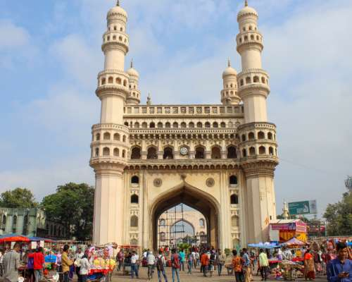
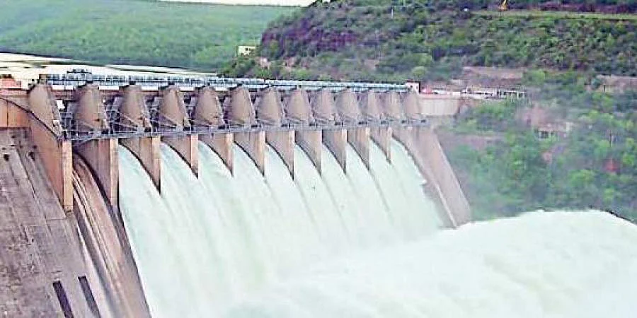
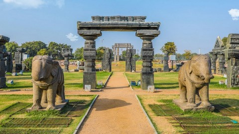
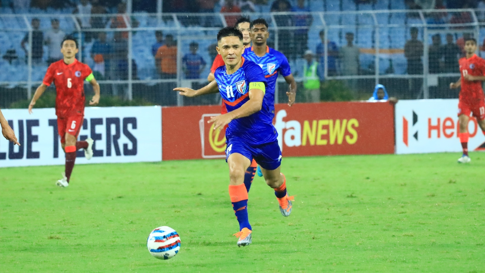

The capital and the largest city of Telanaga, Hyderabad is home to stately mosques and noisy bazaars lined parallelly alongside swanky new office buildings and malls, and it is these very contrasts – these glimpses into the city’s rich past with inherent promises of an even better future –that make Hyderabad a city worth visiting. Maybe even more than once.

Nagarjunasagar is a site of spectacular man-made marvel flanked by equally enchanting panoramic vistas of lush green surrounding. Lying in the Nalgonda District of Andhra Pradesh, the most popular landmark of the town is world's tallest masonry dam Nagarjunasagar dam built over Krishna River.
With the capacity of irrigating around 10 acres of land, this modern architectural grandeur is a sight to behold. Other than that, the town is also renowned for much the talked about the excavation of Buddhist Civilization. An island named as Nagarjuna Konda lying amidst the man-made lake is a site where the relics of such great significance are preserved.

Warangal takes you back to the era of kings and queens with its beautiful historical sites and an impressive natural beauty with Parkhal Lake being worth checking out.
The Warangal city is credited as the fifth largest city in this state. The legends have it that it was known as Oruguallu or Omtikonda or Ekasilanagaram mainly due to the existence of a huge hillock which seemed to have been carved out entirely off one stone. Warangal takes you back to the era of kings and queens with its beautiful historical sites. Warangal natural beauty is no less impressive and the Parkhal Lake and wildlife sanctuaries are also definitely worth checking out. Warangal also houses a National Institute of Technology(NIT) which has made it a famous student hub today.

Chilkur Balaji Temple is situated in the picturesque village of Chilkur, about 30 kilometres away from Hyderabad. It is also called the VISA Temple, and sits prettily on the banks of the Osman Sagar Lake, near the Vikarabad Road. It is believed that paying your obeisance to the presiding deity, Lord Balaji Venkateswara, along with Sridevi and Bhoodev can grant your wishes of gaining a USA Visa! The temple houses the Visa Balaji or the Visa God! The belief finds its roots in an incident when a few students who had their Visa applications rejected, came and prayed here only to have their applications accepted.
Sprawling over a vast area of almost 635 sq. kms, Kinnersani Wildlife Sanctuary is situated in the Khammam district of Telangana. Nestled amidst the Dandakaranya Forest, the sanctuary is flanked by river Godavari on one side. Besides the variety of endangered flora, it is also home to umpteen species of Chousinghas, Sambar, Wild Boars, Gaurs, Chinkara, Cheetals, Hyenas, Sloth Bears etc. With suitable temperature and a pleasant climate, several species live here in tune with nature. In addition to the nature lovers, the region is also a popular hot spot among birdwatchers and photographers.
WATERFALLS
Kuntala Waterfall (45 metres (148 ft)) located in Kuntala, Adilabad district.
Bogatha Waterfall is waterfall located in Koyaveerapuram G, Wazeedu Mandal, Jayashankar Bhupalpally district, Telangana.
Savatula Gundam Waterfalls in Adilabad district
AIRPORT

Rajiv Gandhi International Airport at Shamshabad is an international airport serving the city of Hyderabad. It is the largest airport in the state and one of the busiest airports in the country. The government has plans to upgrade Warangal Airport, Nizamabad Airport and Ramagundam Airport. It also plans to construct airports in Ramagundam and Kothagudem.
SPORTS

The Hyderabad FC is a professional football club based in Hyderabad and plays in top-tier league of India, the Indian Super League. The home ground of the club is G.M.C Balayogi Athletic Stadium, in Gachibowli.[123]
The Hyderabad cricket team is represented in the Ranji Trophy and has won twice. The Sunrisers Hyderabad, an Indian Premier League franchise, is based in Hyderabad and has won the trophy once. Deccan Chargers, a currently defunct franchise from Hyderabad, also won the Indian Premier League once. The Rajiv Gandhi International Cricket Stadium is the home ground of both Hyderabad cricket team and Sunrisers Hyderabad. It hosts international as well as domestic matches. The Hyderabad Hunters, a Premier Badminton League franchise; the Telugu Titans, a Pro Kabaddi League franchise; the Hyderabad Sky, a UBA Pro Basketball League franchise and the Telugu Tigers, a Premier Futsal franchise are also based in Hyderabad. Hyderabad Hunters are previous winners of the Premier Badminton League title.